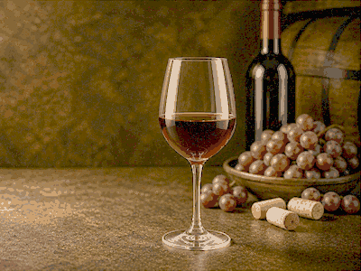

Recipe
Khachapuri
Georgian cheese bread with egg and butter.
Ingredients
- Bread dough
- 300 g sulguni/mozzarella mix
- 1 egg yolk
- Butter
- Flour
- Salt
How to make it
- Shape dough into a boat. Keep the pieces even in size and seal edges well. If the dough or filling feels soft, chill it for 10 minutes before cooking so it holds its shape.
- Fill with grated cheese. Keep the pieces even in size and seal edges well. If the dough or filling feels soft, chill it for 10 minutes before cooking so it holds its shape.
- Bake until the bread is golden. Bake in a fully preheated oven, usually 190-220C, until the top is golden and the center is hot; start checking after 20 minutes for pastries and after 45 minutes for larger roasts.
- Add egg yolk and butter while hot. Continue gently and check texture rather than only the clock; the dish is ready when the main ingredient is tender and well seasoned.
More info
 Georgia
Georgia
WineFresh acidity beside rich food Caucasus table musicWarm feast mood for bread, herbs and grill
Caucasus table musicWarm feast mood for bread, herbs and grillServing note
Keep the plate simple and let the main texture lead: crisp pastry, tender stew, glossy sauce or fresh garnish. This page is a compact cooking overview, not a long article.